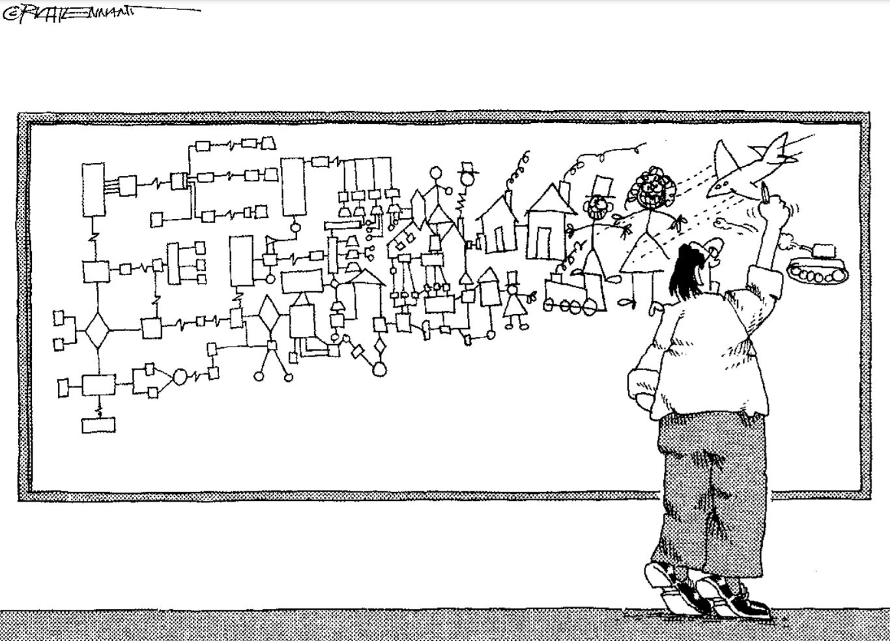

Mind Map Nedir?
Zihin haritası, Türkçe'ye İngilizce Mind (Zihin) + Map (Harita) kelimelerinden geçmiştir. Düşünceleri bağlantılarla ifade ederek görselleştirmek, konuyu kavramayı ve çözümlemeyi hızlandırmak için en sık kullanılan diyagram türlerinden biri Mindmap'tir.

Zihin Haritası Kavramı Nasıl Ortaya Çıktı?
Zihin haritalama tekniği; İngiliz psikolog, matematikçi ve beyin araştırmacısı Tony Buzan tarafından geliştirilmiştir. Teknik, Buzan’ın, beyin ve not alma üzerine yaptığı araştırmalar sonucunda, zihnin işleyiş şeklini ortaya koyan bir not alma modeli olarak 1960’lı yılların sonunda ortaya atılmıştır. Buzan’ın zihin haritalamaya eğilmesinde, öğrencilerin çoğu için pek etkili olmayan klasik notların öğrenme için yetersiz oluşu ve Darwin, Leonardo da Vinci, Einstein, Picasso gibi bilim adamlarının tuttuğu notlara benzememesi temel etkenler olmuştur.
Beynin her iki bölümünü bir arada kullanarak bir konu hakkında şema oluşturmak daha iyi düşünmeyi, uzun süre hatırlamayı, hızlı anımsamayı sağlayacaktır. [Buzan Study Skills]
{{}}Grafiksel Not Almak Ne İşimize Yarayacak?
Grafiksel not alma tekniklerinde "bir resim, bir çizgi ve bir işaret binlerce sözcüğü simgeleyebilir." (Baytekin, 2004) Bunlar olay, olgu ve kavramlar arasındaki ilişkileri gösteren mantıksal örüntülerdir. Dolayısıyla bilgiyi anlamlandırma ve kalıcı hale getirmede oldukça etkilidir. Grafiksel not alma tekniği, birden fazla ilişkiyi ortaya koyarak bütünlük içerisinde kısa sürede anlamlandırmaya yardımcı olur.
Zihin Haritasının Özellikleri:
- Konuya dikkat merkezi bir resimle sağlanır.
- Konunun ana temaları, merkezdeki resimden çıkan dallardan yayılır.
- Dallar, ilişkilendirilmiş çizgiler üzerine yazılan bir anahtar resim veya sözcüğü içerir.
- Dallar arasında yapısal bir ilişki vardır.
Mind Map Nasıl Hazırlanır?
- Büyük bir sayfa kullanılır. A3 olabilir.
- İhtiyaç duyacağınız her bilgi toplanır.
- Zihin haritası yapılacak konu veya sorun seçilir.
- Kağıdın merkezine seçilen konuyu veya problemi simgeleyebilecek büyük ve çerçevesiz bir imge çizilir.
- Dikkat çekmesi ve belleğe yardımcı olması için merkezdeki imge çizilirken boyut, ifade, büyüklük ögelerinden yararlanılır ve en az üç renk kullanılır.
- Merkez ögeden uzanan çizgiler çekilir ve konu hakkında bilinen anahtar sözcükler ve önemli düşünceler yazılır.
- Her çizgiye bir anahtar kelime yazılır.
- Yan dallar oluşturulur. Daha önemli veriler merkezdeki imgenin yakınına yerleştirilir.
- Mümkün olan her yerde imgeler kullanılır.
- Düşüncelerin serbest yayılmasına izin verilir.
Zihin Haritası Hazırlamada Dikkat Edecekleriniz:
- Vurguyu kullanın.
- İlişkilendirin.
- Açık olun.
- Kişisel bir stil geliştirin.
- Numaralandırılmış bir düzen kullanın.
- Hiyerarşiyi kullanın.
- Zihin duvarlarınızı yıkın.
- Tekrar edin.
- Düzenleyin.
Mind Map Niçin Hazırlanır?
Kişisel veya profesyonel planlama, olanakları tanımlama, duyguları ve düşünceleri açığa çıkarma ve performansı değerlendirmede zihin haritaları kullanılabilir.
Klasik Not Alma Tekniğinde:
- Anahtar kelimeler açık değildir.
- Hatırlanmaları zordur.
- Algılaması zordur
- Beynin yaratıcılığını harekete geçirmezler
Mind Map Tekniğinde:
- Anahtar kelimeler açıktır.
- Hatırlanması kolaydır.
- Algılaması kolaydır
- Beynin yaratıcılığını harekete geçirir.
Endüstriyel Tasarım Bağlamında Mind Map
Ürün tasarlarken pek çok seçenek karşımıza çıkmaktadır. Bu noktada hangi tercihi yapmamız gerektiğini sorgulama aşaması oldukça zaman alan bir süreçtir. Bu süreci doğru yönetmek adına kullanılabilecek yöntemlerden biri de Mind Map'tir. Mind Map yöntemiyle birlikte fikir bulabilir, fikir geliştirebilir ve tasarımınızın alt metnini oluşturmada yararlanabilirsiniz.
Zihin haritasında kelimeleri, eskizler ve modeller ile birleştirdiğinizde projenizi çok daha hızlı kavrayabilirsiniz.